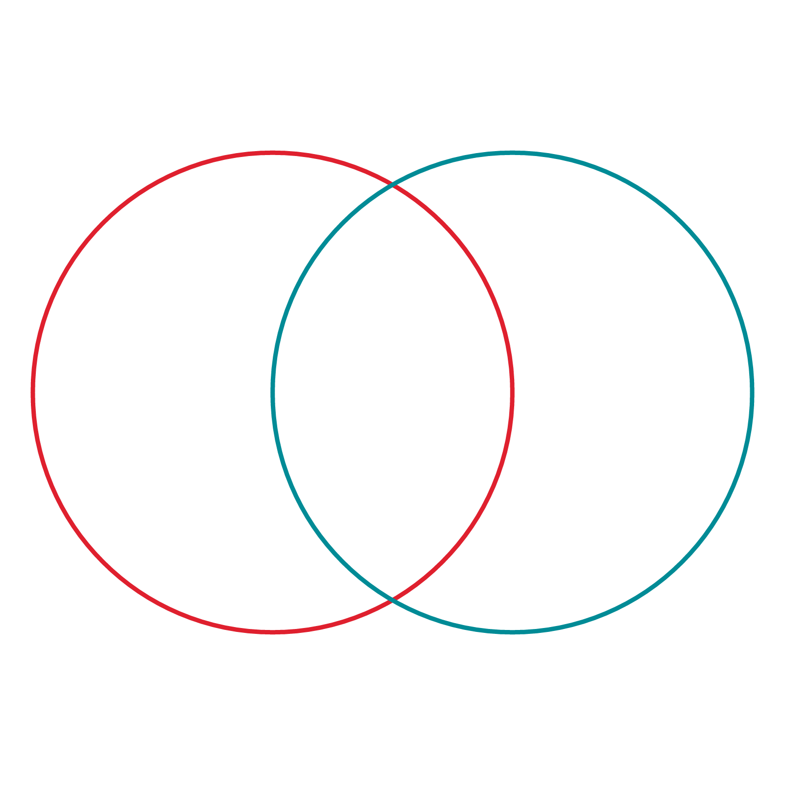
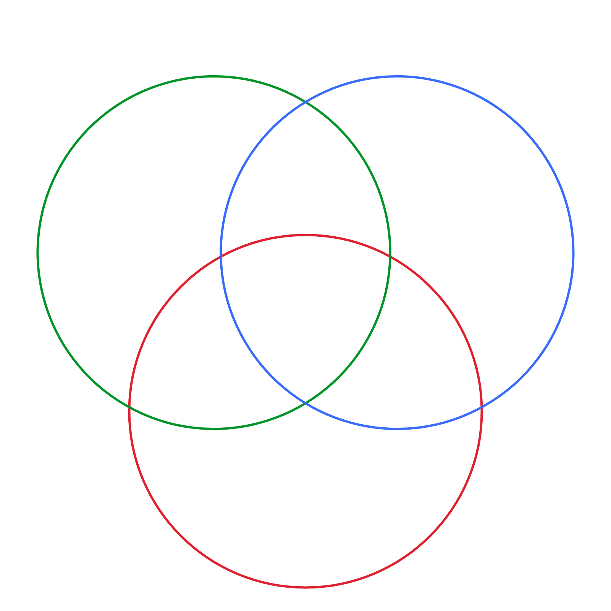
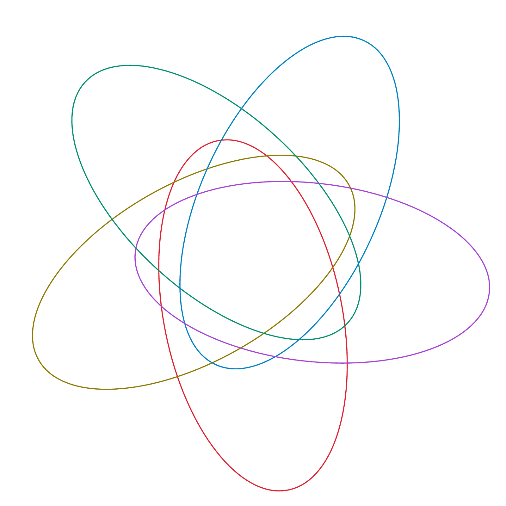
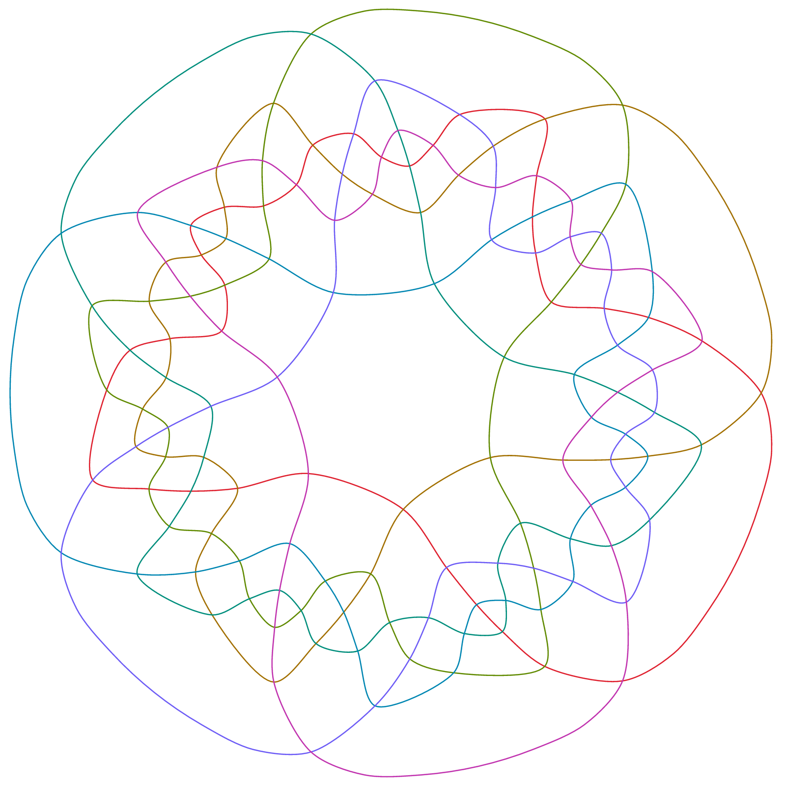
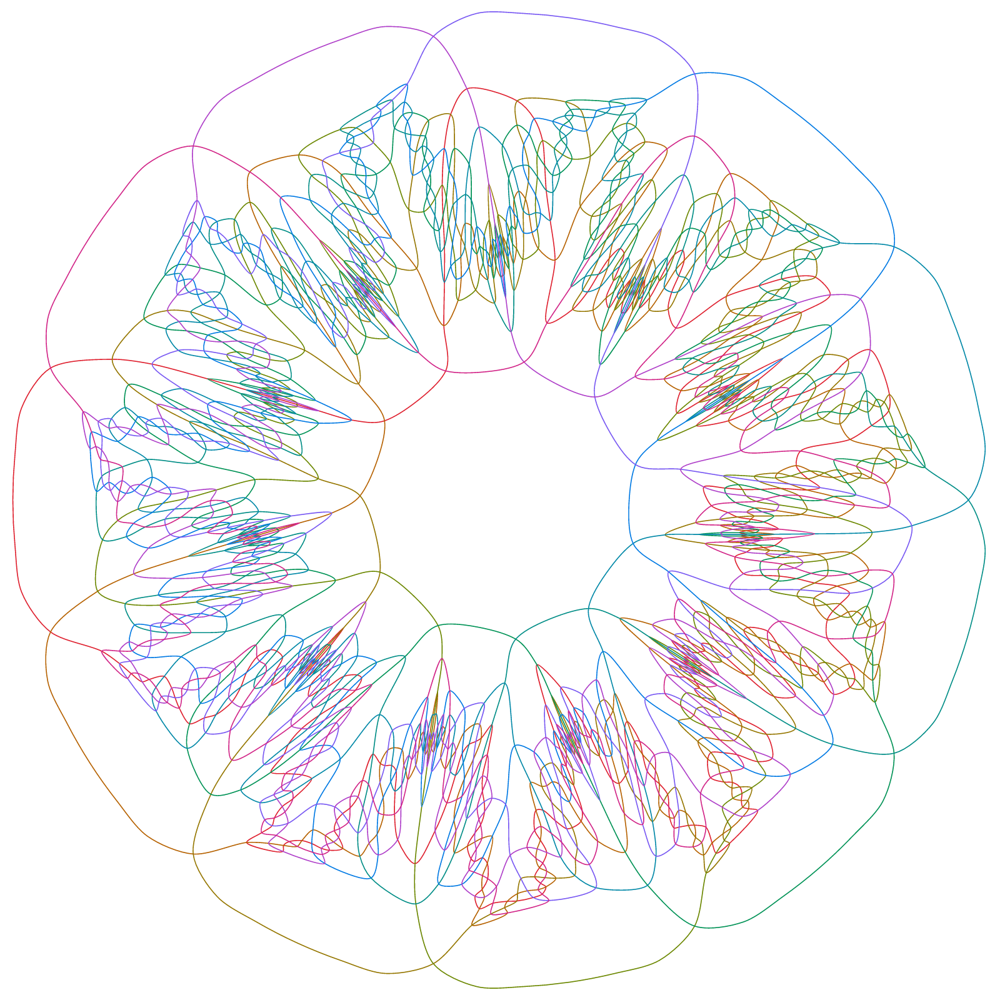
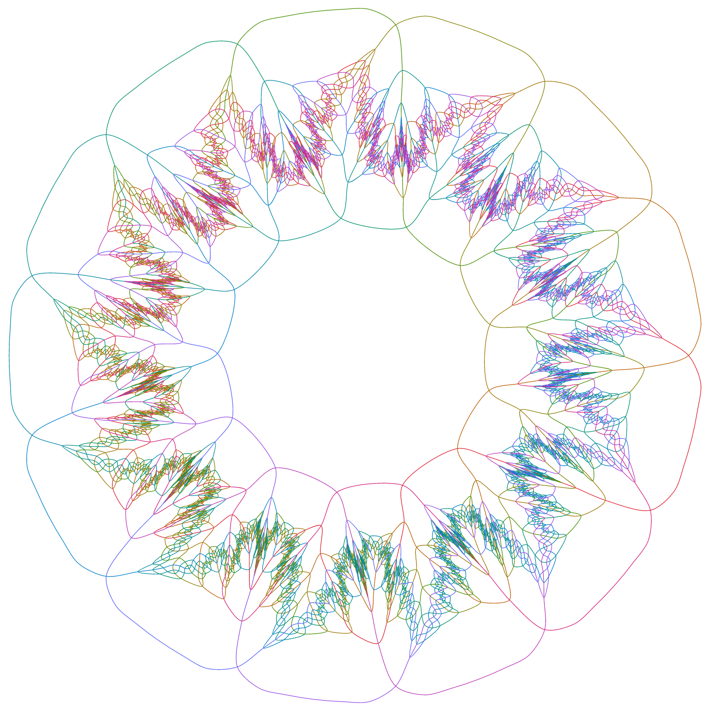
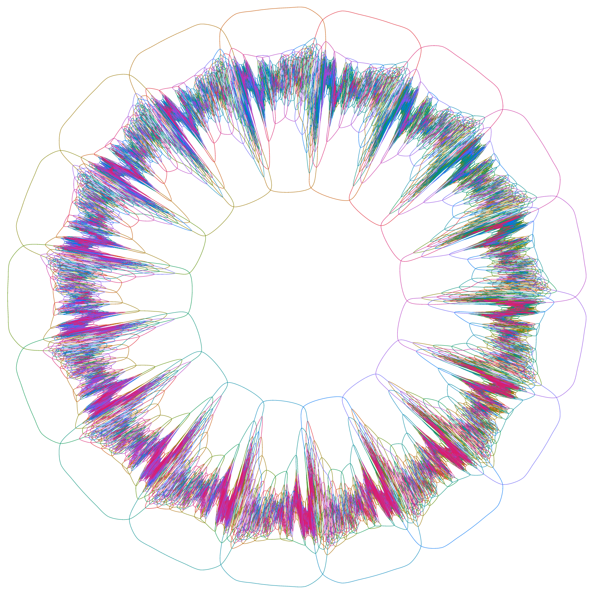

Diagrammata Venniana Symmetrica
An n-curve Venn diagram has one connected region for each of the 2n ways a point can be inside or outside each curve. It's "simple" if no three curves meet at a point, and in that case it has 2n − 2 crossings. It's symmetric if rotating it by 1/n of a turn maps it onto itself.
A diagram can only be symmetric if n is prime (Henderson 1963; complete proof by Wagon and Webb 2008), and symmetric diagrams exist for every prime (Griggs, Killian, Savage 2004), but those aren't simple. Simple symmetric diagrams were known only up to n = 13 (Mamakani and Ruskey 2014) until Chris Dzoba, using Claude and Codex, found ones with 17 and 19 curves in September 2026 and with 23 in October.
Below is a simple symmetric Venn diagram for each prime. Click an image (except the last two) to open it as a zoomable vector image."
2
Two circles: Venn 1880. 4 regiones, 2 intersectiones.

3
Three circles: Venn 1880. 8 regions, 6 crossings.

5
Five congruent ellipses: Grünbaum 1975. 32 regions, 30 crossings.

7
“Hamilton”, discovered and named by A. W. F. Edwards (1998); one of the 23 simple monotone symmetric 7-curve diagrams (Mamakani, Myrvold, Ruskey 2012). 128 regions, 126 crossings.

11
“Newroz”, the first simple symmetric 11-curve Venn diagram (Mamakani and Ruskey 2012). 2048 regions, 2046 crossings.

13
The first simple symmetric 13-curve Venn diagram (Mamakani and Ruskey 2014). 8192 regions, 8190 crossings.

17
One of four simple symmetric 17-curve Venn diagrams that Claude and Codex found under Chris Dzoba's direction in September 2026; this one (venn17-local-c3-s2) was verified in Lean 4 by Justin Grimes. 131,072 regions, 131,070 crossings.

19
One of twelve simple symmetric 19-curve Venn diagrams found in September 2026 the same way; this one (venn19-closure-s196002) is also verified in Lean 4. 524,288 regions, 524,286 crossings.
Picture: Chris Dzoba's drawing of this diagram (CC BY 4.0).


23
Six simple symmetric 23-curve Venn diagrams were found on October 5 and 6, 2026 (Dzoba). As of October 6, 2026 their certificates, 889 MB each, weren't publicly available. 8,388,608 regions, 8,388,606 crossings.
